OK, Homesteaders . . . here's the fourth installment of Morton Salt's superior booklet, A COMPLETE GUIDE TO HOME MEAT CURING. MOTHER NO. 19 took you through preserving and into curing poultry. This section tells you how to cut and cure beef, veal and wild game.
We'll be serializing more from the Morton Salt handbook in future issues . . . but we still advise you to drop $1.25 into the mail and add the manual to your farmstead bookshelf right now. It's packed with valuable information on butchering, cutting up and curing pork, beef, veal, lamb, poultry and wild game. Get your copy from Morton Salt Company, P.O. Box 355, Argo, Illinois 60501.
Again, our special thanks to Murray J. Pearthree, Morton Salt Regional Sales Manager, for granting us written permission to reprint from the booklet.
SEPARATING FORE AND HIND QUARTERS The first step in cutting the beef carcass is quartering, which is dividing the fore and hind quarters. The carcass has thirteen ribs on each side. The first cut is made between the last two ribs, leaving twelve ribs on the fore quarter and one rib on the hind quarter. Insert the knife between the twelfth and thirteenth ribs at the belly end of the ribs and make the cut all the way to the backbone. Then saw the backbone in two, which leaves the fore quarter hanging from the uncut strip at the flank. While one person holds the fore quarter to keep it from falling, another one finishes, the cut at the flank, completing the separation of the fore and hind quarters.
Lay the fore quarter on the cutting table with the outside of the carcass up, and begin making the cuts.
SEPARATING PLATE FROM RIB Measure 10 inches from the backbone or chine along the 12th rib, as illustrated with the yardstick in the picture below. Using this as a starting point, a straight line cut is made, continuing the cut across the shank just above the elbow joint.
SAWING OFF PLATE AND FORE SHANK After the cut is made with a knife, the ribs are sawed through and the fore shank sawed off at the elbow.
SEPARATING RIB AND CHUCK Make a cut with the knife between the fifth and sixth ribs to separate the rib cut from the chuck. Complete the cut with the saw, sawing through the backbone.
The rib cut is one of the choice fore quarter cuts and comprises about 10% of the carcass. It is one of the more lender cuts and is extensively used for roasting. Roasts are made by cutting between the ribs. These roasts may be boned and rolled if desired. The chuck is somewhat less tender and better adapted for pot roasts, corning or grinding. It comprises approximately 25% of the carcass.
REMOVING FLANK FROM HIND QUARTER The thin three-cornered flank piece is trimmed from the hind quarter. This contains the flank steak which can be pulled out. The balance of the flank can be used for boiling piece or ground for hamburger, meat loaf. etc.
REMOVING KIDNEY Next, trim out the kidney and kidney knob from the hind quarter, leaving sufficient fat on the backbone to cover the tenderloin.
SEPARATING LOIN FROM ROUND The loin should be separated from the round at the ball and socket hip joint. After starting the cut with a knife, complete it with the saw.
SEPARATING THE LOIN The loin should be divided into short loin and loin end, the division being made at the hip joint. Steaks from the short loin are very popular.
REMOVING RUMP FROM ROUND The rump is removed from the round by sawing across the floor of the aitch bone. The rump makes a desirable roast or choice corned beef.
There are many different ways to use the various beef cuts, in order to get the greatest value from them. Some of the cuts may be used fresh, some cured, and some canned.
CHUCK (or Shoulder) After the plate, foreshank, and rib have been removed from the forequarter, the balance is called the chuck. From the chuck are cut shoulder roast, pot roast, and shoulder steaks. The part which contains the ribs is cut into chuck roast, or steak. The black guide lines indicate a practical method of cutting up the chuck separating it into chuck, rib roasts, cross arm or round bone chuck roasts, knuckle and neck.
GROUND MEAT FROM NECK The neck and parts of the chuck can be ground for hamburger or ground and used in various types of sausage.
BONELESS SHOULDER ROAST Any part of the shoulder may be boned for boneless roast. Cut meat into desired thickness for roast, remove bones, roll, and tie with heavy white cord.
LONG SHOULDER BONED AND ROLLED Another method of using the shoulder is to remove the bone and make a long roll, tying with heavy white cord. This roast can be used fresh or pumped and cured with Tender-Quick for later use.
BONING MEAT When beef is butchered on the farm, a large part of the meat can more easily be used, cured or canned if the pieces are boned and rolled. After a little practice and after learning the location of the bones, boning meat is very simple. Trim close to the bones without gouging, leaving as little meat on the bones as possible.
SHOULDER CLOD The shoulder clod is the thick, heavy portion of the chuck that lies on top of the shoulder plate at the foreshank side of the chuck. The shoulder clod is good for pot roasts, boiling beef, beef stew, or ground for hamburger.
FORESHANK The foreshank is excellent for soups or stewing meat. When used for soup, the shank should be cut the desired size by first cutting the meat to the bone, then sawing. The shank meat may also be ground for hamburger after removing the meat from the bones.
BRISKET The brisket lies between the chuck and the foreshank. Its medium thickness streaked with lean and fat makes it the ideal cut for corned beef. Lay the brisket rib side down and trim across to the bones to remove the meaty part, as illustrated.
The illustration below shows brisket removed from bones. Before putting the brisket in TenderQuick pickle for corning, cut it in uniform pieces of about 6 to 8 lbs.
Beef brisket when cured with Tender-Quick makes delicious corned beef. The curing ingredients in Tender-Quick counteract the usual drying and hardening effect of the salt. Instead of shrinkage and loss of meat juices, Tender-Quick cured corned beef is rich and full flavored. The tendering and firming up process that takes place with the Tender-Quick cure retains the meat juices.
PLATE-Boned and rolled for curing When beef is butchered on the farm, the question is often asked, what to do with the plate. The plate can be quickly boned out and the bony portion used immediately for soup or soup stock. After boning, the plate makes an ideal piece for rolling and curing. Roll the plate lengthwise and tie with heavy white cord. After rolling, pump with Tender-Quick pickle and cure.
RIB Rib roasts are one of the choicest parts of the carcass. When the bone is left in, the rib is called a Standing Rib Roast. Lay the rib on the table backbone down and cut into the desired size roasts by cutting between the ribs to the backbone. Then finish the cut with a saw through the backbone. For making rib roast boned and rolled as illustrated at the right above, remove the bones, roll and tie.
SPENCER ROLL The Spencer Roll, as illustrated below, consists of about two-thirds of the meaty portion of a standard rib cut, and is removed with boning knife from top of ribs. The Spencer Roll may be cut into short steaks or boneless rib steaks.
FLANK After the flank has been removed, the flank steak, which is all lean meat and oval shaped, is taken out with the boning knife by cutting around the edge of the steak and pulling out by hand. The flank steak can be used fresh. After the steak has been removed, the flank, trimmed of surplus fat, is used for boiling, stews, or hamburger, or it can be rolled and tied and used for a roast, or cured for later use.
SHORT LOIN From the front end of the short loin, rump steaks are cut. These steaks have no tenderloin and contain pieces of the 13th rib. From the center of the short loin T-bone steaks are cut. From the rear portion of the short loin come the Porterhouse steaks. These have a large portion of the tenderloin muscle and also the T-bone.
Porterhouse roast-the short loin may be cut into roasts the desired thickness, usually called Porterhouse roasts. Cut the same as for cutting Porterhouse steak except for thickness. Porterhouse roasts may be used with the bone in or the bone may be removed and the roast rolled and tied the same as a boneless rib roast.
LOIN END From the loin end sirloin steaks are cut. With steak knife cut meat to the bone the desired thickness, usually 1/2 to 3/4 inches, then saw through the bone to complete the cut. The first three or four cuts are called "first-cut" sirloin steaks. The center cuts are known as "flat" or "wedge bone" sirloin steaks. The balance are known as "pin" or "hip bone" steaks.
A sirloin roast may also be cut from the loin end and is cut the desired size in the same manner as cutting sirloin steak.
RUMP The rump is an excellent piece for making rump steaks, rump roasts, and for corning. To bone the rump, remove all bone by starting at the top of the rump. After boning, roll rump lengthwise inside of the piece to be inside of the roll. Hold in place and tie with heavy cord.
ROUND Round steaks are cut across the grain. The lower part of the round, which is less tender and does not make satisfactory steaks, may be boned out for pot roast. This part of the round is known as the end of the round. The shank may be used for soup stock or boned and ground. In addition to cutting steaks from the round, the round is excellent for curing or for dried beef, and when used in this way should be split into three portions.
That portion in front of the thigh bone is known as the "knuckle" which is a tender cut. The remaining portion of the round is slit through the center, making the top or inside round, which is very desirable for curing. The bottom or outside round is less tender but is an excellent piece for making dried beef.
Beef has a larger percentage of lean meat than pork and, because of the high percent of lean meat in beef, it tends to become hard when cured. You need a special curing salt for beef, and Morton Tender-Quick fits this need exactly.
CURING EQUIPMENT Tender-Quick is the only curing salt necessary for curing any of the different cuts of beef, using either the Dry Cure or the Sweet Pickle Cure. Tender-Quick develops and intensifies the full richness of the natural flavors in the meat.
A more uniform cure-nicer color, and rich riper flavor will be obtained if the large pieces of meat, or pieces that have bone, are first pumped with a Tender-Quick pickle before putting them in cure, either by the Dry or Sweet Pickle cure.
To make the pumping pickle for beef, use water that has previously been boiled and cooled, and mix the water and Tender-Quick at the rate of 2 lbs. TenderQuick per gallon of water, stirring it until all of the Tender-Quick dissolves.
When pumping beef, insert the meat pump needle in the meat and along the bones in such manner as to distribute the pumping pickle as uniformly as possible throughout the piece of meat being pumped. Pump about 1 to 1 1/2 oz. of pickle per pound of meat-a 12 lb. piece of meat 12 to 16 oz. of pumping pickle, which would be 3 to 4 pumpfuls, when using Morton Meat Pump, as it holds 4 oz.
When drawing the pickle into the pump, work the handle up and down a few times in order to get the barrel full of pickle without air pockets.
It is desirable to drop the pump needle in boiling water for a few minutes before using it in order to sterlize it. After the needle is sterilized meat can be pumped without touching the needle.
First pump the larger pieces, and pieces that have bone, with a Tender-Quick pumping pickle, pumping 1 to 1 1/2 oz. of pickle per pound of meat. After the meat is pumped, use about 7 lbs. Tender-Quick per 100 lbs. of meat. Divide the Tender-Quick into approximately three equal parts and first rub the meat with one-third of the Tender-Quick. Then in three or four hours rub on the second one-third and after twenty four hours rub on the balance. Pack the meat in a stone crock, box or barrel for curing, putting the larger pieces on the bottom and the smaller o nes on top. Over-haul and repack the meat in a different position when the curing time is about one-half up.
The meat should remain in cure for about 1 1/2 days per pound; for example, 6 lb. pieces 9 days; 10 lb. pieces 15 days. Where a light cure is desired, leave the meat in cure only one day per pound.
When the curing time is finished, brush off the surplus cure, or lightly wash each piece in tepid water and let the meat dry thoroughly. After the pieces are thoroughly dry, wrap them in parchment paper and hang away in the dryest, coolest, best ventilated place available. If the meat is damp when hung away, or kept in a damp, warm place, it will mold much faster than if it is kept dry and cool and in a well ventilated place. A little mold, however, does not hurt the meat as it can easily be washed off with vinegar or trimmed off when the meat is used.
First pump the larger pieces, and pieces that have bone, with a Tender-Quick pickle, pumping 1 to 1 oz. of pickle per pound of meat. The pickle is made by mixing 2 lbs. of TenderQuick per gallon of water.
After the meat is pumped, pack it in a stone crock or clean, well scalded barrel, putting the heavy pieces at the bottom and lighter ones on top. Then mix a TenderQuick curing pickle at the rate of 2 lbs. Tender-Quick per gallon of water. The water should be previously boiled and allowed to cool. Stir the curing pickle until the Tender-Quick is completely dissolved. Pour the curing pickle over the meat until the meat pack begins to shift, then weight the meat down with a clean stone or other weight and pour in enough additional curing pickle so that the top layer of meat is a few inches below the pickle. It will take five or six gallons of curing pickle for 100 lbs. of meat, depending on how closely the meat is packed.
Leave the meat in the curing pickle about 2 days per pound; for example, a 10 lb. piece 20 days. Where a light cure is desired, leave the meat in cure 1 1/2 days per pound. The meat should be overhauled and the position of the pieces changed when the curing time is about one-half up. When overhauling, it is best to remove the pickle, then change the position of the pieces by repacking, and pour back the pickle.
After the curing time is up, wash the meat in tepid water and let it dry throughly. When it is thoroughly dry, wrap in parchment paper and hang away in a cool, dry, well-ventilated place.
Any part of the round is excellent for making dried beef. Cure in a Tender-Quick pickle or dry cure with Tender-Quick.
After curing, wash the meat and let it hang and drip for some 24 hours. Then hang in a warm place where all water will evaporate from it. Then hang and smoke until it takes on a rich, dark color. After smoking, let it dry and slice as needed.
Spread out the desired amount of thoroughlychilled ground beef in a pan and sprinkle with one level to heaping teaspoonful (according to taste preference) of Morton Meat, Poultry and Sausage Seasoning per pound of ground beef.
Add two teaspoonsfull of Tender-Quick per pound of ground beef with only sufficient water to thoroughly dissolve the Tender-Quick.
Mix all ingredients thoroughly and let stand in refrigerator for from four to six hours before forming into patties for broiling or pan frying. Quick-cured beef sausage can also be formed into a "pattie-sized" roll and kept in waxed paper in the refrigerator or freezer for future use.
Tender, juicy corned beef is easy to make. Corned beef cured with Tender-Quick will slice firm. It will be tender. It will have unusually fine flavor and excellent appearance when cooked. The full richness of the hidden natural flavors in the meat are developed and intensified by the Tender-Quick cure.
The curing ingredients in Tender-Quick counteract the usual drying and hardening effect of the common salt, and instead of shrinkage in the meat and loss of meat juices, corned beef cured with Tender-Quick remains firm, juicy, and full of flavor. This is brought about by the tendering and firming up processes that take place in the meat fibres, the retaining of the meat juices and the fact that the Tender-Quick penetrates more fully into the muscle fibres and into the fat.
TENDER, UNIFORM CURE The thorough penetration of the Tender-Quick pickle into the tiny muscle fibres provides a place of deposit for the meat juices-helps bring about the tendering process and makes possible a mild, uniform cure. Every part of the meat is evenly cured. There are no under-cured or partially cured spots in Tender-Quick cured corned beef. The brisket is the most popular cut for making corned beef, but boneless cuts from the plate, flank, chuck, rump, and shank are also good cuts to use. Of course, the better grade of meat used the better will be the finished result.
The beef should be thoroughly chilled, fresh, and unfrozen. Cut the meat into uniform size pieces, about 6" to 8" squares, for curing.
MAKING THE CURING PICKLE Make the curing pickle by mixing at the rate of 2 lbs. Tender-Quick per gallon of water; stirring the Tender-Quick until it dissolves. The water should have been boiled and allowed to cool before using.
Use a clean crock or curing container for packing in the meat. After the meat is packed in the container, pour in the Tender-Quick curing pickle until the meat begins to shift. Place a weight on the meat and pour in enough additional pickle to fully cover the meat.
After the meat has been in the cure 5 or 6 days pour off the pickle and repack the meat, changing the position of the pieces by putting those that were on top at the bottom. Then weight the meat down and re-cover with the pickle.
The meat should remain in cure about 2 days per pound; for example 6 lb. pieces 12 days, 8 lb. pieces 16 days, 10 lb. pieces 20 days. etc. Smaller pieces will be ready to use in about a week.
Corned beef that is to be used up in a reasonable time after it is cured can be left in the pickle until used.
Corned beef that is to be kept for a long period of time may be canned, or it may be taken from the pickle, washed in tepid water, and thoroughly dried. Then wrap in parchment paper and hang in a cool, dry place.
Veal is the dressed carcass of a calf six to ten weeks old. The same general steps in butchering, skinning, and cutting beef can be followed for veal, except veal should not be kept off feed for longer than six to eight hours before butchering, and during this time should have plenty of fresh water. Veal from beef type cattle produces the nicest meat, as the calves are broader in form and more heavily muscled. Veal is very tender and is mostly lean meat. It contains very little fat. Veal also contains a high proportion of moisture and for that reason most of the carcass should be used up fresh. The heavier cuts can be lightly cured in a Tender-Quick pickle and canned.
The picture shows guide lines for making veal cuts after the carcass has been chilled. The sweetbreads, brains, and liver are choice parts that are used up first. The neck and shank are excellent for cutting into chunks and using for soups and stews.
The trimmings can be ground for veal loaf.
Much of the wild game harvested annually that reaches the sportsman's table is of low quality and off flavor. The primary cause of low quality, off flavor, taint or actual spoilage of wild game is due to improper field dressing, chilling and handling.
Wild game is highly perishable and as soon as an animal or bird has been felled by shot or arrow the natural bacteria in the blood and flesh start to multiply. These bacteria like to be comfortably warm. Given the right temperature they develop one multiply at a rapid page and taint or spoil the meat . . . chilled and kept cold their action is almost stopped.
It is self evident then that obtaining high quality meat from wild game, as from domestic animals, is actually a. race between the time the animal is killed, properly cleaned and thoroughly chilled before curing and/or cooking.
"JERKING" is a quick and practical way to preserve Venison, Moose, Antelope, Caribou, Bear, Elk, Buffalo as well as beef. The end product is known as "JERKY." Jerky can be kept without refrigeration. It can be eaten uncooked or cut into paper-thin slices and creamed as one would cream chipped beef.
There are several ways of making jerky.
PREPARING THE MEAT Cut chilled (35-40 degrees °F) muscle meat lengthwise of the grain. Cut the meat into strips approximately one-inch thick and about 1 1/2 to 2 inches wide. Make the strips as long as you can.
DRY-CURE JERKY Rub each strip of meat generously with Tender-Quick. In three or four hours repeat the process and pack the strips in a stone crock, wood barrel, or wood curing box or non-metallic container for curing. Sprinkle a light covering of Tender-Quick over each layer of strips as they are packed.
At the end of two days, overhaul the strips, repack, and again sprinkle a small amount of Tender-Quick on each layer. Allow to cure for another 48 hours. When the curing time is finished, brush off the surplus cure, or lightly wash each piece in tepid water and let the meat dry thoroughly. After the pieces are thoroughly dry (see drying instructions), wrap them in parchment paper and hang away in the driest, coolest, best-ventilated place available. If the meat is damp when hung away, or kept in a damp, warm place, it will mold much faster than if it is kept dry and cool and in a well-ventilated place. A little mold, however, does not hurt the meat as it can easily be washed off with vinegar or trimmed off when the meat is used.
SWEET PICKLE CURE Pack the strips of muscle meat in a stone crock or clean, well-scalded wooden barrel. Then mix a Tender-Quick curing pickle at the rate of 2 lbs. Tender-Quick per gallon of water. The water should be previously boiled and allowed to cool. Stir the curing pickle until the Tender-Quick is completely dissolved. Pour the curing pickle over the meat until the meat pack begins to shift; then weight the meat down with a clean stone or other weight on a large plate or board and pour in enough additional curing pickle so that the top layer of meat is a few inches below the pickle. Leave the strips of meat in the curing pickle for about five days.
The meat should be overhauled and the position of the pieces changed when the curing time is about one-half up. When overhauling, it is best to remove the pickle; then change the position of the pieces by repacking, and pour back the pickle. After the curing time is up, let each strip dry thoroughly and follow storage instructions as for dry-cure jerky.
"HOT" SWEET-PICKLE CURED JERKY Cut chilled muscle meat lengthwise of the grain. Cut the meat into strips approximately 3/8th inch by 3/8th inch and as long as possible. Prepare a curing pickle by adding two pounds of Tender-Quick to ten cups of water. Bring the curing pickle to a near boil and dip each strip into the hot sweet pickle until they turn nearly white. Dry each strip and handle for storage the same as for dry-cure jerky.
DRYING JERKY Attach a cord to one end of each strip and hang up in a cool, dry place until thoroughly dry. Do not allow the strips to touch each other during the drying process. Protect the meat from dirt and insects with a clean, light cloth shroud.
As long as jerky is exposed to air it will continue to dry. After each strip is dry, wrap in parchment as instructed for storage.
SMOKING JERKY will add much to the flavor and help preserve the meat.
SMOKING INSTRUCTIONS Remove the cured strips of cured jerky from the dry and/or sweet pickle cure or hot sweet pickle cure and rinse in tepid water. Wipe dry and hang the strips in the smoke house. Be careful that the strips do not touch each other.
Use non-resinous woods for smoking. Apple, cherry and hickory woods are preferred; however peeled willow and alder can also be used.
Start a fire in the smoke house with the ventilators open and no smoke but temperature at 120 degrees for approximately two hours and/or until the strips are thoroughly dry.
After this drying period, start the smoke, close drafts and reduce temperature to approximately 100 degrees for a cool smoke.
ALTERNATE: If the jerky strips have been hung and allowed to thoroughly dry (24 hours or more) the aforesaid "drying period" at 120 degrees may be omitted. Cool smoke at 100 degrees may be started at once.
Smoke at 100 degrees until the desired degree of smoke has been reached.
After smoking, wrap in parchment paper and store in a dry, cool, well-aired place . . . and not in direct light.
After the carcass of antelope, deer, elk and other large game has been chilled and skinned out, cut in convenient sized pieces similar to cutting up beef or lamb.
Because most wild game have a high percentage of lean meat, it tends to become hard when cured. Wild game needs a special curing salt and Tender-Quick fits this need exactly.
To Dry Cure or Sweet Pickle Cure different cuts of wild game, follow the same general curing directions as for beef.
Quail, pheasant, duck, squirrels, rabbits, etc.. should be cleaned and washed as soon as convenient after they are killed, and then hung a short time, if weather is cool, to chill.
For curing small game, ducks, etc. it is best to use the sweet pickle cure, except when it is necessary to put the game in cure quite a distance from home or camp. Under these circumstances the dry cure is preferable because it is easier to use and handle without the added weight of water or a watertight container.
For the sweet pickle cure make a pickle of 2 lbs. Tender-Quick per gallon of water. Pack the game in a stone crock and cover with the pickle. For the dry cure apply Tender-Quick to the game, rubbing it in, and using at the rate of about 6 to 7 lbs. Tender-Quick per 100 lbs. of meat.
It is not advisable to cure different types of game in the same pickle. However, squirrels and rabbits may be cured together, also ducks and geese. Quail, pheasant and various kinds of game birds may be cured together. Leave the meat in the pickle until it is used.
|
The picture above shows the beef carcass after making the major cuts. Referring to this picture will help you understand the following suggestions for making the different cuts. |
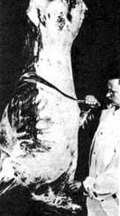 Pumping meat with a Tender-Quick Pumping |
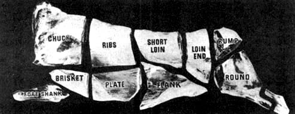 Pickle before putting it in cure |
|
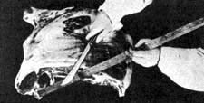 Rubbing Tender-Quick on Meat for the Dry Cure |
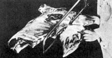 and Packing down in a Stone Crock |
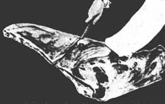 Separating front shank from shoulder and back after leg has been removed by cutting crosswise just above the hip bone. |
|
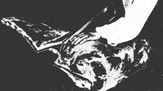 Cutting sirloin-roast from leg of veal. |
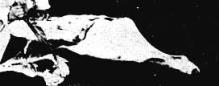 Cutting round steaks or cutlets from leg of veal. Veal rump is pictured in the center and veal steak at the left. |
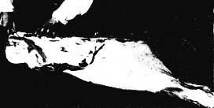 Removing rump from leg of veal after sirloin has been removed. Sirloin is pictured at the left. |
|
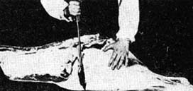 |
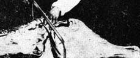 |
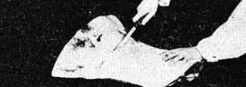 |
|
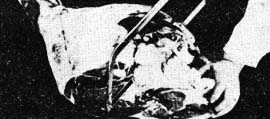 |
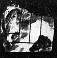 |
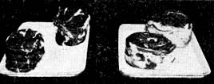 |
|
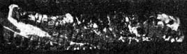 |
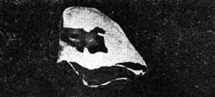 |
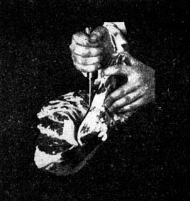 |
|
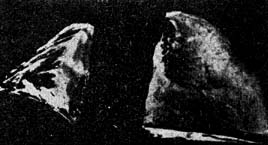 |
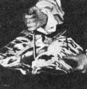 |
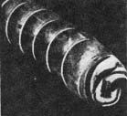 |
|
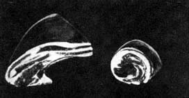 |
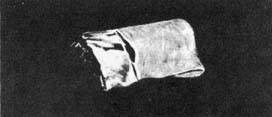 |
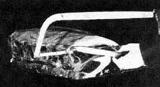 |